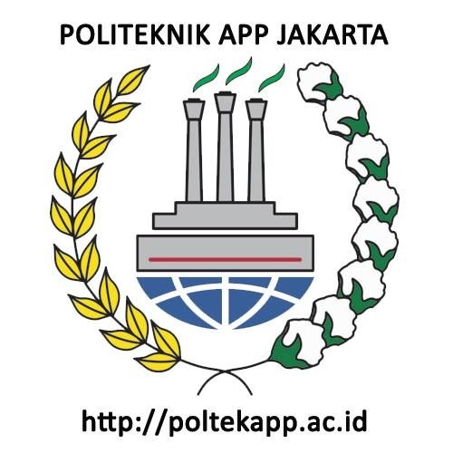
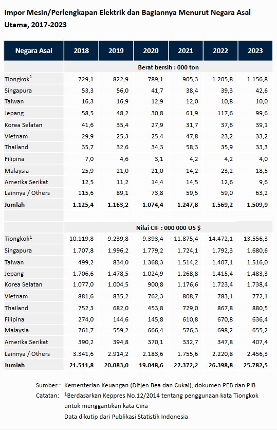
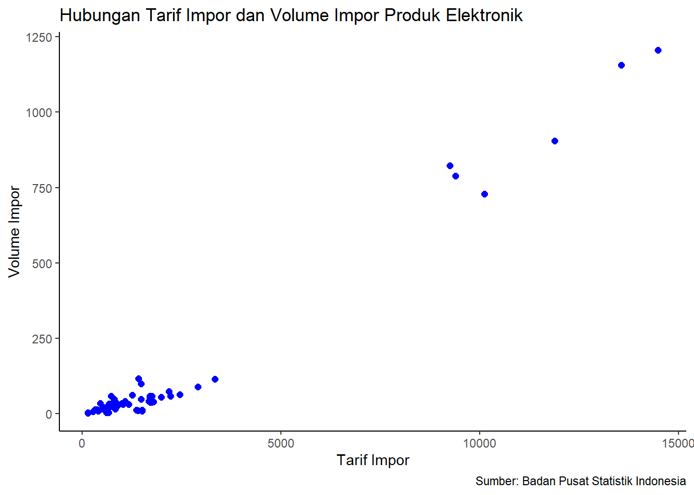

library(tidyverse)
library(readxl)Pengaruh Tarif Impor terhadap Volume Impor Produk Elektronik di Indonesia (2018-2023)
Metode Penelitian Politeknik APP Jakarta

1 Pendahuluan
1.1 Latar Belakang
Perdagangan internasional merupakan salah satu pilar penting dalam perekonomian suatu negara, termasuk Indonesia. Dalam beberapa tahun terakhir, sektor elektronik telah menjadi salah satu komoditas utama yang diimpor oleh Indonesia. Produk elektronik, seperti smartphone, televisi, dan peralatan rumah tangga, memiliki permintaan yang tinggi di pasar domestik (Kementerian Perdagangan, 2023). Namun, kebijakan tarif impor yang diterapkan oleh pemerintah dapat mempengaruhi volume impor produk tersebut. Oleh karena itu, penting untuk menganalisis pengaruh tarif impor terhadap volume impor produk elektronik di Indonesia dalam periode 2018-2023.
1.2 Ruang Lingkup
Penelitian ini akan membahas pengaruh tarif impor terhadap volume impor produk elektronik di Indonesia selama periode 2018 hingga 2023. Fokus utama penelitian ini adalah pada produk elektronik yang diimpor, termasuk smartphone, televisi, dan peralatan rumah tangga.
1.3 Rumusan Masalah
- Apakah terdapat pengaruh tarif impor terhadap volume impor produk elektronik di Indonesia?
- Seberapa besar pengaruh tarif impor terhadap volume impor produk elektronik di Indonesia?
1.4 Tujuan dan Manfaat Penelitian
Tujuan penelitian ini adalah untuk mengetahui pengaruh tarif impor terhadap volume impor produk elektronik di Indonesia selama periode 2018-2023.
Manfaat penelitian ini adalah agar masyarakat, pelaku industri, dan pembuat kebijakan memahami bahwa tarif impor memiliki pengaruh signifikan terhadap volume impor produk elektronik di Indonesia, serta memberikan informasi yang berguna dalam merumuskan kebijakan tarif impor yang lebih efektif.
1.5 Package
2 Studi pustaka
Berdasarkan Laporan Realisasi Ekspor-Impor Perangkat Teknologi Informasi dan Komunikasi Indonesia (2023) oleh Kementerian Perdagangan, volume impor perangkat teknologi informasi dan komunikasi (TIK) Indonesia menunjukkan tren fluktuasi pada periode 2018–2023. Total impor mencapai puncaknya pada tahun 2022 dengan USD 8,54 miliar, sebelum mengalami penurunan sebesar -2,37% pada semester pertama 2023 menjadi USD 4,16 miliar. Barang modal mendominasi struktur impor perangkat TIK, mencapai 91,15% pada Januari–Juni 2023, dengan produk utama seperti ponsel, perangkat komunikasi, dan laptop. Data ini mengindikasikan bahwa perubahan kebijakan tarif impor dapat berdampak signifikan terhadap volume impor perangkat elektronik, yang menjadi bagian besar dari perdagangan Indonesia.
3 Metode Penelitian
3.1 Data
Data yang digunakan adalah data impor mesin perlengkapan elektrik dan bagiannya menurut negara asal utama dari tahun 2018 hingga 2023 yang bersumber dari Badan Pusat Statistik (BPS).

3.2 Metode Analisis
Metode yang dipilih adalah regresi univariat atau Ordinary Least Square (OLS) dengan 1 variabel independen. Penelitian ini bertujuan untuk mencari hubungan antara volume impor dan tarif impor. Spesifikasi yang dilakukan adalah:
\[ y_{t}=\beta_0 + \beta_1 x_t+\mu_t \] di mana \(y_t\) adalah volume impor dan \(x_t\) adalah tarif impor.
4 Pembahasan
4.1 Pembahasan Masalah
data <- read_excel("Impor Mesin_Perlengkapan Elektrik dan Bagiannya Menurut Negara Asal Utama, 2018-2023.xlsx")
data# A tibble: 66 × 4
Tahun Negara `Volume Impor` `Tarif Impor`
<dbl> <chr> <dbl> <dbl>
1 2018 Tiongkok1 729. 10120.
2 2018 Singapura 53.3 1708.
3 2018 Taiwan 16.3 499.
4 2018 Jepang 58.5 1707.
5 2018 Korea Selatan 41.6 1077
6 2018 Vietnam 29.9 882.
7 2018 Thailand 35.7 752.
8 2018 Filipina 7 274
9 2018 Malaysia 25.9 762.
10 2018 Amerika Serikat 12.5 390.
# ℹ 56 more rowsggplot(data = data, aes(x = `Tarif Impor`, y = `Volume Impor`)) +
geom_point(color = "blue", size = 2) + # Titik scatter biru
labs(
title = "Hubungan Tarif Impor dan Volume Impor Produk Elektronik",
x = "Tarif Impor",
y = "Volume Impor",
caption = "Sumber: Badan Pusat Statistik Indonesia"
) + theme_classic()
4.2 Analisis Masalah
Berdasarkan metode penelitian dan data yang telah diperoleh, dilakukan analisis sebagai berikut.
# Hitung total Volume Impor dan Tarif Impor per tahun
data_total <- data %>%
group_by(Tahun) %>%
summarise(
Total_Volume_Impor = sum(`Volume Impor`, na.rm = TRUE),
Total_Tarif_Impor = sum(`Tarif Impor`, na.rm = TRUE)
)
# Regresi linier sederhana dengan total data
model <- lm(Total_Volume_Impor ~ Total_Tarif_Impor, data = data_total)
# Ringkasan model
summary(model)
Call:
lm(formula = Total_Volume_Impor ~ Total_Tarif_Impor, data = data_total)
Residuals:
1 2 3 4 5 6
-87.05 47.59 28.90 -22.96 25.53 8.00
Coefficients:
Estimate Std. Error t value Pr(>|t|)
(Intercept) -2.455e+02 1.853e+02 -1.325 0.25577
Total_Tarif_Impor 6.778e-02 8.164e-03 8.302 0.00115 **
---
Signif. codes: 0 '***' 0.001 '**' 0.01 '*' 0.05 '.' 0.1 ' ' 1
Residual standard error: 54.59 on 4 degrees of freedom
Multiple R-squared: 0.9451, Adjusted R-squared: 0.9314
F-statistic: 68.93 on 1 and 4 DF, p-value: 0.001149Hasil analisis regresi menunjukkan bahwa terdapat pengaruh positif yang signifikan antara tarif impor dan volume impor produk elektronik di Indonesia. Dengan nilai p-value = 0.00115, hubungan ini signifikan secara statistik, menunjukkan bahwa kenaikan tarif impor sebesar 1 unit meningkatkan volume impor sebesar 0.06778 unit. Model ini juga memiliki \(R^2\) sebesar 94.51%, yang berarti 94.51% variasi dalam volume impor dapat dijelaskan oleh tarif impor.
5 Kesimpulan
Diperoleh bahwa tarif impor memiliki pengaruh positif yang signifikan terhadap volume impor produk elektronik di Indonesia. Hal ini berarti peningkatan tarif impor akan mengakibatkan volume impor yang ikut meningkat.
6 Saran
Untuk meningkatkan akurasi dari penelitian dan mengetahui faktor lain yang dapat mempengaruhi volume impor, disarankan untuk menambahkan variabel independen yang lain.
7 Referensi
Badan Pusat Statistik Indonesia. (8 September 2014). Impor Mesin/Perlengkapan Elektrik dan Bagiannya Menurut Negara Asal Utama, 2018-2023. Diakses pada 2 Januari 2025, dari https://www.bps.go.id/id/statistics-table/1/MTA1MCMx/impor-mesin-perlengkapan-elektrik-dan-bagiannya-menurut-negara-asal-utama–2018-2023.html
Kementerian Perdagangan. (2023). Realisasi Ekspor-Impor Perangkat Teknologi Informasi dan Komunikasi Indonesia Periode 2018-2023. Jakarta: Kementerian Perdagangan Republik Indonesia.